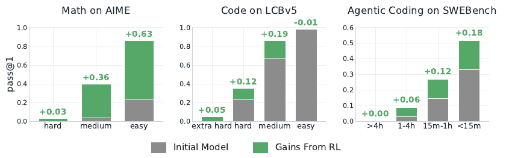
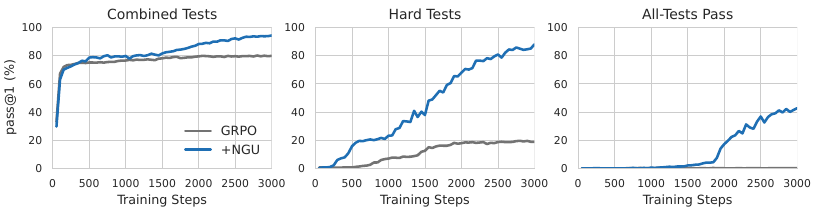

Never Give Up: Adaptive Sampling Against the Matthew Effect in RL for LLMs
TL;DR
- Michael Noukhovitch (Mila/UdeM), Hamish Ivison (UW), Nathan Lambert (Trillium Labs) and Aaron Courville (Mila) document a Matthew Effect in RL for LLMs: across three open RL-trained models in three domains, gains land almost entirely on problems the base model already solved. On AIME, Olmo 3.1 RL-Zero gains +0.63 pass@1 on easy problems and +0.03 on hard. DeepSWE gains +0.18 on sub-15-minute SWE-Bench tasks and +0.00 on >4-hour tasks.
- The intuitive explanation — hard problems produce all-wrong groups, so no gradient — turns out to be wrong. Holding total batch size fixed, raising completions-per-prompt \(K\) from 4 to 32 makes things worse, including on the hardest problems. The real cost is signal efficiency: large \(K\) keeps easy prompts in the batch (one wrong sample out of 32 is enough) and spends compute re-solving them.
- Never Give Up (NGU) is the fix, and it is four lines: sample a small \(K\); if all correct, drop the prompt as too easy; if mixed, train on it; if all wrong, put it back in the queue with probability \(p\). Asynchronous RL turns the freed capacity into harder prompts. On Manufactoria, standard GRPO plateaus at ~80% of individual coding tests and never passes all tests on a single problem; NGU keeps climbing on hard tests and learns to fully solve problems.
Why this matters
The default mental model of RL post-training is that you throw a difficulty-mixed dataset at GRPO and the model improves across it. This paper measures that assumption on three released models and finds it false in a specific, load-bearing way: RL improves performance in proportion to initial competence. If your evaluation averages over a difficulty-mixed benchmark, a run that moved only the easy half looks like broad improvement.
That matters most for exactly the workloads people now care about. Long-horizon agentic tasks are the hard tail by construction — the SWE-Bench panel of Figure 1 shows RL buying nothing at all on the >4-hour bucket. If the effect is driven by compute allocation rather than by some information-theoretic wall, it is an infrastructure problem with an infrastructure fix, and this paper makes the case that it is.

Figure 1 from the paper: Olmo 3.1 RL-Zero on AIME, DeepCoder on LCBv5, DeepSWE on SWEBenchVerified, each compared to its initial model (Olmo 3 7B Base, Deepseek-Qwen-14B, Qwen3-32B). Grey is the initial model, green is what RL added.
The core idea
GRPO computes each completion's advantage against an empirical group baseline over \(K\) samples:
If all \(K\) completions fail, every advantage is zero and the prompt contributes no gradient. That observation motivates the signal loss hypothesis: hard problems don't improve because correct solutions are never sampled, so raise \(K\).
The authors test it directly on GSM8k Platinum with Qwen 2.5 0.5B Instruct, sweeping \(K \in \{4, 8, 16, 32\}\) with \(N \in \{64, 32, 16, 8\}\) prompts to hold \(N \times K\) constant. Every setting shows the Matthew Effect, and \(K=4\) is best overall — most clearly on the hardest problems. Holding batch size fixed, the expected number of times each problem is sampled doesn't change with \(K\); what changes is which prompts survive filtering. A prompt is kept only if it yields a nonzero gradient, and with \(K=32\) a single wrong completion out of 32 is enough to keep an otherwise-solved prompt in the batch.
So the authors propose the signal efficiency hypothesis: the problem is not undersampling hard prompts, it is oversampling easy ones. NGU makes the sampling budget per prompt adaptive rather than fixed. On an all-wrong group, continue with probability \(p_{\mathrm{NGU}}\) and give up otherwise, which makes the total sample count per prompt geometric with mean
so \(K=16\) with \(p = 0.5, 0.75, 0.875\) gives theoretical averages of 32, 64 and 128 — but spent where they're needed instead of uniformly.
One subtlety makes NGU more than "resample hard prompts." Because NGU accumulates completions across rounds, once a correct answer finally appears it forms one large GRPO group with all the previous failures, so a rare success gets a much larger advantage than the \(1 - \tfrac{1}{4}\) ceiling that \(K=4\) would allow. Stale negatives are filtered from the loss (only completions younger than \(T\) steps are kept; \(T=4\) is best, \(T=8,16\) degrade) but their rewards still inform the baseline. To keep advantages summing to zero after that filtering, the paper introduces anchoring the positives: leave positive advantages alone and rescale the surviving negatives to
with \(n_+, n_-\) the counts of positive and remaining negative completions and \(\bar{r}\) the NGU-wide mean reward. This beats both no-rescaling and the downsampling approach from prior work — discarding useful negatives turns out to be actively harmful.
How it works
NGU sampling for an asynchronous RL trainer
(generator G, trainer L, completions per prompt K,
continuation prob p_NGU, buffer S, age cutoff T)
1. while trainer running:
2. receive y_1..y_K ~ π_θ(·|x) from generator G
3. r_i = R(x, y_i); r̄ = mean(r)
4. k = K
5. if x has previous completions in buffer S(x):
6. pop y_NGU, r_NGU, k_NGU, r̄_NGU
7. r̄ = (r̄_NGU * k_NGU + r̄ * K) / (k_NGU + K) # baseline over ALL samples
8. k += k_NGU
9. extend y, r with previous completions of age <= T # drop stale
10.
11. if all r_i == 1: # too easy
12. give up on x
13. else if any r_i > r̄: # mixed -> usable gradient
14. emit (x, y, r, r̄) for the GRPO update
15. else: # all wrong -> may be hard
16. u ~ Uniform(0,1)
17. if u < p_NGU: # never give up
18. push x back onto generator G's queue
19. S(x) <- y, k, r̄
20. else:
21. give up on x
Asynchrony is load-bearing, not incidental. The whole point is that quickly-filtered easy prompts are immediately replaced by harder ones drawn from the queue; in a synchronous trainer that waits for the slowest rollout, the freed capacity has nowhere to go. The paper demonstrates this necessity explicitly and compares against prior synchronous work in the appendix.
Results
Math at scale. Qwen 3 4B-base on a 10k Deepscaler subset, evaluated on AIME 2025 and BRUMO Nov 2025, with difficulty buckets from the initial model's pass@64 (hard = pass@64 of 0, \(n{=}28\); medium averages 2.9%, \(n{=}16\); easy averages 46.1%, \(n{=}16\)). All runs compute-matched at roughly 120 H100-hours, three seeds. Improvement in pass@1 over the initial model:
| Setting | Easy | Medium | Hard | Total |
|---|---|---|---|---|
| N=2, K=64 | 23.3 ± 1.9 | 15.3 ± 1.5 | 2.5 ± 0.2 | 11.5 ± 0.5 |
| N=8, K=16 | 26.8 ± 2.6 | 14.5 ± 3.6 | 1.6 ± 0.3 | 11.7 ± 1.0 |
| + NGU p=0.875 | 26.8 ± 1.7 | 16.3 ± 0.9 | 4.3 ± 1.2 | 13.5 ± 0.6 |
| + NGU p=0.75 | 28.1 ± 0.2 | 16.8 ± 3.3 | 3.0 ± 1.2 | 13.4 ± 0.7 |
| + Sampling Curriculum | 22.7 ± 1.6 | 15.5 ± 1.4 | 4.0 ± 1.1 | 12.1 ± 0.8 |
Note the curriculum baseline, which sets \(K\) per prompt from the model's initial performance. It matches NGU on the hardest bucket but loses 4.1 points on easy — because difficulty is not static, and a fixed difficulty estimate goes stale as training proceeds. NGU re-estimates difficulty implicitly, every step, for free.
Code, and a sharper version of the effect. On Manufactoria (Qwen3 4B Instruct; each problem has 14–30 test cases spanning difficulties), the Matthew Effect initially fails to appear — because the task and its long prompt are novel, and the first ~100 steps are the model adapting to the harness rather than learning the task. Re-bucketing difficulty after that adaptation makes the effect reappear cleanly, which the authors name the harness-aware Matthew Effect: RL improves performance in proportion to the model's early performance after accounting for adaptation to a prompt or harness. That is a measurement warning worth internalizing — difficulty ratings taken at step 0 on a novel harness measure prompt familiarity, not task difficulty.

Figure 9 from the paper: GRPO plateaus around 80% of combined tests and under 20% on hard tests, and never passes all of a problem's tests. NGU starts slightly worse, keeps improving on hard tests, and converts that into full problem solutions.
Adding only \(p_{\mathrm{NGU}} = 0.95\) to the baseline changes the outcome qualitatively rather than quantitatively. GRPO with per-test rewards derives most of its reward variation from inconsistently solving medium tests, so compute cycles on near-solved behavior; NGU keeps sampling until harder tests are solved. A final comparison starts both methods from the same 3000-step GRPO checkpoint and finds per-test-reward-with-NGU roughly matches training with the all-tests reward in compute efficiency — which also demonstrates that an LLM can train 3000 steps under a suboptimal objective and still recover, unlike the classic primacy bias in from-scratch RL where plasticity loss makes bad early trajectories permanent.
How it connects
- It re-scopes what RL is actually buying. The tracker has several results about RL sharpening rather than expanding — most directly Sequential Beats Joint, added the same day, where OPD expands pass@\(k\) coverage and RL redistributes mass within it. The Matthew Effect is the dataset-level shadow of the same phenomenon: RL concentrates where mass already exists.
- Async RL stops being an efficiency story. Frameworks like Molt, built around a fully asynchronous streaming loop, sell asynchrony as throughput and trainer simplicity. NGU needs it for correctness of allocation: without a queue to refill from, filtering easy prompts quickly buys nothing. That is a genuinely different argument for the same infrastructure.
- The harness-aware caveat generalizes. Harness Continual Learning and EvoHarness-RL both treat the harness as state that must be learned separately from the task. NGU's Manufactoria finding says the same thing from the measurement side: on a novel harness, the first phase of any RL curve is harness adaptation, and difficulty statistics taken before it has finished are not about the task.
- A cheap alternative to test-time elaboration. Sample More, Reflect Less found repeated sampling beats self-refinement at equal token cost at inference. NGU is the training-time analogue — allocate more samples to hard instances rather than more machinery per sample.
Critical take
The scale is modest: 0.5B for the mechanism study, 4B for both scaled experiments. The claim that signal loss is not the primary driver rests on a fixed-batch-size sweep on GSM8k Platinum with a 0.5B model, which is a clean experiment but a narrow one — at frontier scale, with much harder data, "we never sample a correct solution" may genuinely bind in a way it doesn't here. The paper's framing ("one cause," "exacerbating") is appropriately hedged; the discourse around it will probably not be.
NGU also inherits a structural risk it doesn't fully close: it decides a prompt is hard because the current policy fails it, and unsolvable prompts are only bounded by the geometric give-up probability. On a dataset with mislabeled or genuinely impossible items, \(p = 0.95\) means an average of \(20K\) samples burned on each one before giving up. The math experiments use a curated 10k subset; the paper does not report what happens with a noisy training set, which is the realistic case.
Finally, the headline coding result is on Manufactoria — a Flash-game-derived automata benchmark chosen precisely because standard RL stalls on it. That makes it a good stress test and a weak generality claim. The Deepscaler numbers are the honest measure of the method's size: +1.8 total pass@1 over the best baseline, +2.7 on the hard bucket, with overlapping error bars on two of three seeds' worth of spread. Real, reproducible, and much smaller than the framing suggests.
If you remember three things
- RL improves what the model could already do. Across math, code and agentic coding, gains scale with initial competence — +0.63 vs +0.03 pass@1 on easy vs hard AIME problems, +0.18 vs +0.00 on short vs long SWE-Bench tasks. Difficulty-averaged benchmark deltas hide this completely.
- More completions per prompt is the wrong knob. At fixed batch size, \(K=4\) beats \(K=32\) even on hard problems, because large \(K\) keeps nearly-solved prompts in the batch. The binding constraint is oversampling easy prompts, not undersampling hard ones.
- NGU is a queue policy, not a loss function. Give up on all-correct groups, train on mixed groups, and re-queue all-wrong groups with probability \(p\) — then let asynchronous RL refill the freed capacity. Keep stale negatives out of the loss but in the baseline, and anchor the positives when rescaling.